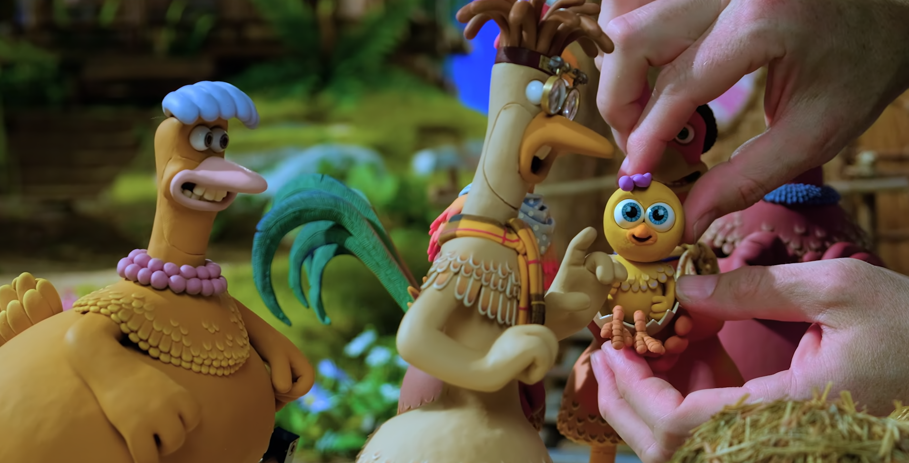
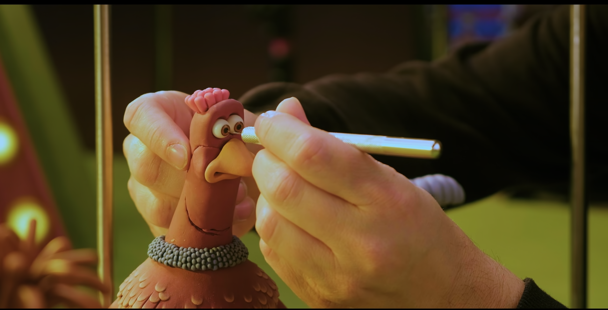
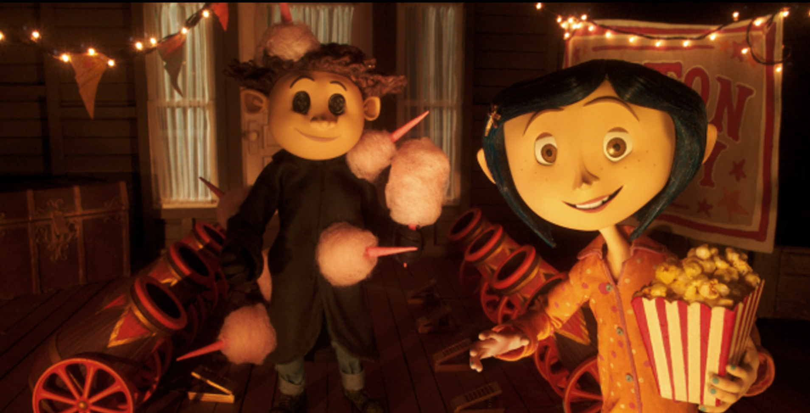
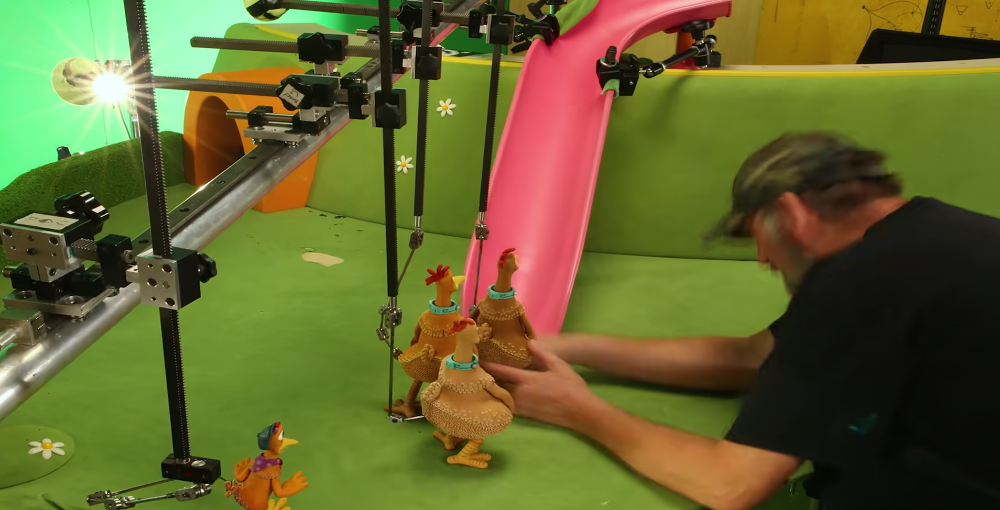
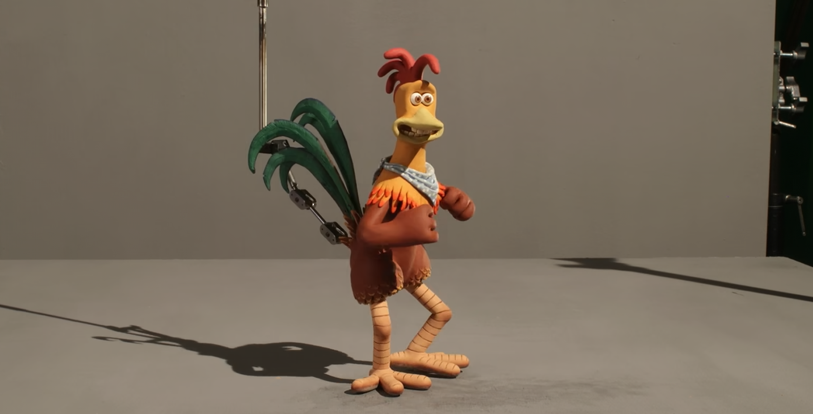
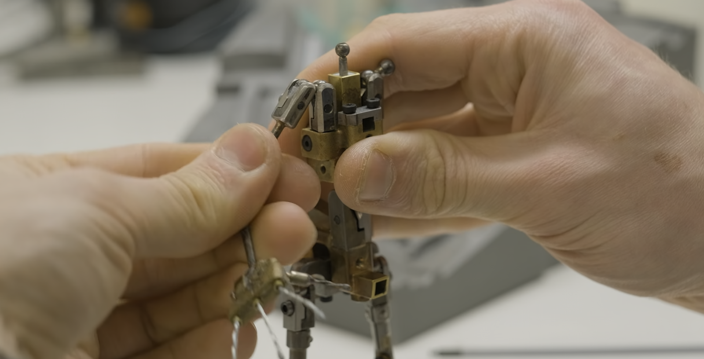
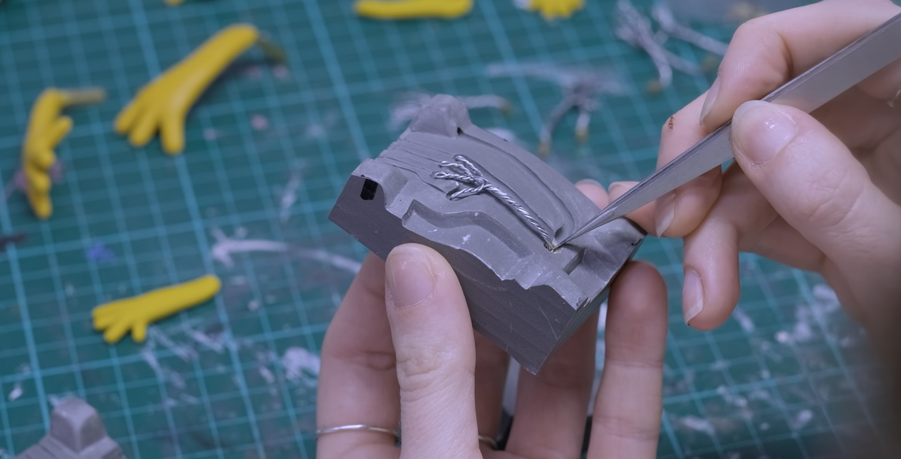

ストップモーション

ストップモーションとは？
ストップモーション（ストップモーション・アニメーション）は、静止した物体を少しずつ動かして1コマずつ撮影し、連続して再生することで、まるで自分で動いているように見せるアニメーション技法です。
人形や粘土、紙などを使って1秒間に12〜24枚の写真を再生することで、滑らかな動きを表現します。

ストップモーションの特徴
- 手作業のアニメーション： 実際の素材を使うため、温かみのある独特な表現になります。
- 時間がかかる制作： 一コマずつ撮影するため、多くの時間と努力が必要です。
- 素材の自由度： 粘土、紙、人形、食べ物など、さまざまなものが使えます。

チキンラン ナゲット大作戦以外有名なストップモーション作品
- 『ナイトメアー・ビフォア・クリスマス』
- 『ウォレスとグルミット』
- 『コララインとボタンの魔女』

ストップモーションの作り方（基本の流れ）
- キャラクターや背景を作る
- カメラと照明をセットする
- 少しずつ動かして1枚ずつ撮影する
- 写真をつなげて編集する

ストップモーションの魅力
ストップモーションは手作りのアートであり、クリエイターの個性がよく表れます。スマートフォンや無料アプリでも作れるため、初心者でも挑戦しやすいジャンルです。

ストップモーションに使われる道具
- アームチュア： キャラクターの内部に入れる骨組みで、自由にポーズをつけることができます。
- DSLRカメラ： 高画質で撮影するためによく使われます。
- 照明機材： 影の位置や明るさを調整して安定した映像を作ります。
- アニメーションソフト： 撮影した画像をつなげて編集するためのソフト（例：Dragonframe）

ストップモーションの歴史
ストップモーションの技法は19世紀末から使われています。最も初期の作品の一つに、1898年の『The Humpty Dumpty Circus』があります。
その後、レイ・ハリーハウゼンなどのクリエイターによって特撮や映画に取り入れられ、発展してきました。